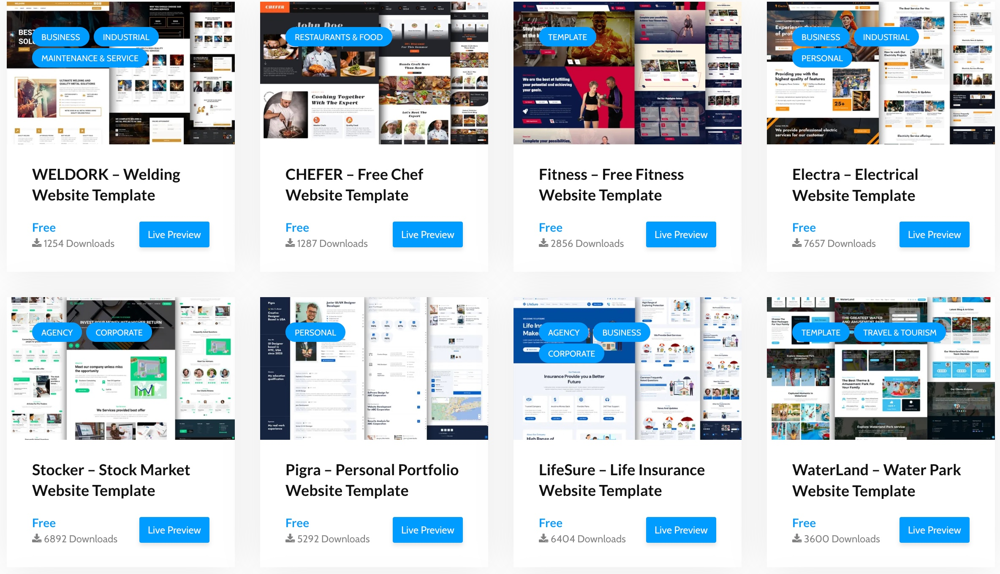

1. Empathize
I started by understanding the needs and expectations. I know that I need a navigation bar and five different sections to display my projects. I also want to make sure that the website is easy to use and visually appealing.

Design thinking is a user-centered approach to problem solving and innovation. For this website, I followed the five key stages of design thinking to ensure the site is both visually appealing and highly usable.
I started by understanding the needs and expectations. I know that I need a navigation bar and five different sections to display my projects. I also want to make sure that the website is easy to use and visually appealing.
I think users want quick access to my projects, a clear sense of my skills, and a visually pleasing experience. I summarized these needs into clear design goals for the site.
I brainstormed multiple layouts, color schemes, and interactive features. To look some webiste template and I also use it as a reference.
I created a working prototype of the website using HTML, CSS, and JavaScript. This allowed me to quickly test ideas, adjust the navigation, and refine the visual style before finalizing the content.
I shared the prototype with friends and family member, collecting feedback on usability, accessibility. Based on their suggestions, I improved the navigation, color contrast, and added more project details.

Creating a button the button will become visible when I Swipe down and when I press the button it will automatically return to the top.


Making this portfolio website has been a very useful experience. It helped me learn a lot about web development and design. During this process, I faced some problems but also learned many new things that helped me improve as a developer. At first, I planned carefully and did some research. I looked at many portfolio websites to understand good design and how to make the site easy to use. This research helped me decide how to organize my website and what features to include. I wanted to make a simple and clean design that shows my skills and projects well. I also wanted to make sure the website is easy for everyone to use. When I started building the site, I found some technical challenges. One big problem was making sure the website looks good on all devices like phones, tablets, and computers. I learned to use flexible layouts and media queries to fix this. I also learned a lot about accessibility. I added features like correct HTML structure These changes helped more people use my website and made it better overall. I tested the website many times on different browsers and devices. This helped me find and fix problems early. Testing many times made my website more stable and easy to use. One of the best parts was using what I learned in class in a real project. I tried different CSS and JavaScript techniques and design ideas. This helped me improve my skills. Solving problems also made me think more carefully. In the end, this project helped me grow as a web developer. It showed me the importance of planning, details, and designing for users. The experience I gained will help me in my future projects and career.